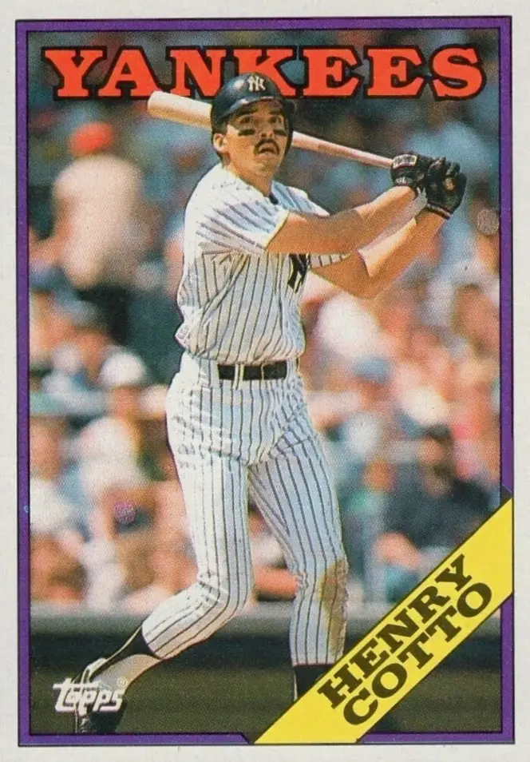

Henry Cotto
Career Highlights & Facts
(Facts are AI-generated and may require verification)
- Possessed elite speed, recording 130 stolen bases throughout a professional career.
- Achieved championship success abroad by winning a major international series title.
- Transitioned into a long-term coaching role after concluding a decade of major league play.
Would you like to find out more about Henry Cotto?
Read Player Biography
Henry Cotto
January 4, 2012
/
in
BioProject - Person
/
by
admin
This bio is not assigned. Want to write a SABR bio? Contact
bioproject@sabr.org
.
Full Name
Henry Cotto
Born
January 5, 1961 at New York, NY (USA)
Stats
Baseball Reference
Retrosheet
Tags
None
Wikipedia Summary:
Henry Cotto is an American former professional baseball outfielder and coach. He played in all or parts of ten seasons in Major League Baseball, from 1984 until 1993. He played one season in Japan for the Yomiuri Giants, winning the 1994 Japan Series. After a brief return to the minor leagues in 1995, he retired. He then coached in the minor leagues for two decades.
Career Totals
| WAR | AB | H | HR | BA | R | RBI | SB | OBP | SLG | OPS | OPS+ |
|---|---|---|---|---|---|---|---|---|---|---|---|
| 4.1 | 2178 | 569 | 44 | .261 | 296 | 210 | 130 | .299 | .370 | .669 | 84 |
Statistics via Baseball-Reference.com
The Original Clue